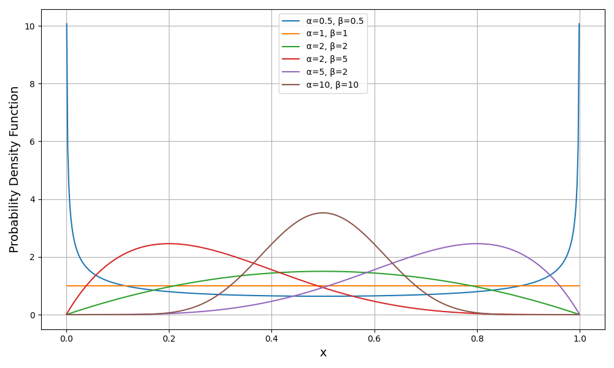
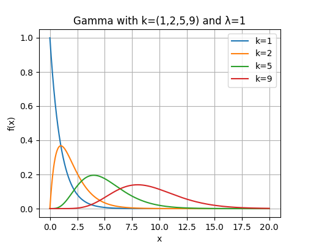
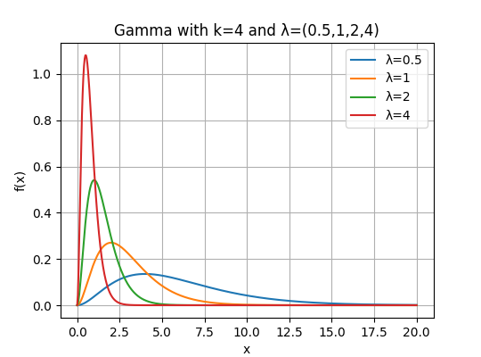
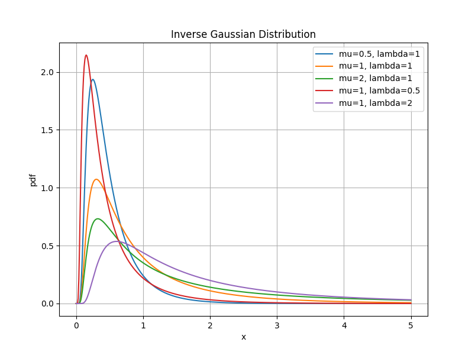

在这个系列中，我们一开始学习的是一般的线性回归模型，它处理的是连续的实数值；到后来我们又学习了逻辑回归模型和泊松回归模型，使得我们可以处理离散的正值。最后还剩一种情况我们没有讨论，就是连续的正值，也就是说，响应变量只能取大于0的连续实数。要处理这一类响应变量，我们需要引入新的分布和模型。
注意，本讲我们只介绍相应的分布以及回归的拟合方法，对于模型的检验和诊断方法与之前的内容完全一致，这里不再反复叙述。
一、Beta回归
1.1 Beta分布
要讲清楚Beta回归，首先要了解Beta分布。
Beta分布要从二项分布开始说起。我们已经知道，如果随机变量X服从二项分布，即X∼B(n,π)，那么其概率质量函数可以写作：
Pr(X=x)=Cnxπx(1−π)n−x
事实上，二项分布假定了π为一个定值，也就是说，二项分布是一个条件分布Pr(X=x∣π)。那么自然想到，对于参数π来说，在给定观测下也会存在波动，也满足一个分布。根据贝叶斯公式可以发现：
Pr(X=x∣π)=Pr(π)Pr(Π=π∣X=x)Pr(X=x)
由于Pr(X=x)和Pr(π)都是常数，所以：
f(Π)=Pr(Π=π∣X=x)∝πa(1−π)b
其中a,b均为常数，且π∈(0,1)。
既然存在正比关系，那么我们待定系数k，使得f(Π)=kπa(1−π)b。要使得f(Π)是个分布，那我们只需要令函数在(0,1)之间的积分为1即可：
∫01kπa(1−π)bdπ=1
不难求得k=1/∫01πa(1−π)bdπ，带入原式即可。
为了保持和教材的表达一致性，我们令α=a+1，β=b+1，x=π，积分变量dt=dπ，并且令Beta函数为：
B(α,β)=∫01tα−1(1−t)β−1dt
就有分布函数：
f(X=x;α,β)=B(α,β)1xα−1(1−x)β−1
这就是Beta分布。为了帮助你理解Beta分布的性质，我们绘制不同α,β取值下Beta分布的性状：

从图中你可以窥见Beta分布的性质：
- 自变量取值在(0,1)之间
- 连续的取值
- 形状多样（U型、倒U型、钟形、均匀分布、逼近正态），可以有偏态
因此，Beta分布可以用于描述0~1之间的连续值，例如转化率、点击率等。
最后，Beta分布的期望和方差分别为：
EXVar(X)=α+βα=(α+β)2(α+β+1)αβ
1.2 Beta回归的拟合
如果响应变量Y服从Beta分布，那么就可以搭建Beta回归了。为了描述方便，我们令：
μ=α+βα,ϕ=α+β
此时有：
Y∼Beta(μϕ,(1−μ)ϕ)
我们称μ为均值参数，ϕ为精度参数。
接下来我们需要选择联系函数。Beta回归选择的联系函数与二项分布相关回归一样，最常见是取逻辑函数，即：
g(μ)=log1−μμ
当然，你也可以选择probit连接、log-log连接等。
接下来我们以逻辑连接为例，展示参数估计过程。为了方便叙述，我们对Beta函数进行等价转换，即：
B(α,β)=Γ(α+β)Γ(α)Γ(β)
其中Γ()是Gamma函数。因此Beta分布可以重写为：
f(y;α,β)=Γ(α)Γ(β)Γ(α+β)yα−1(1−y)β−1=Γ(μϕ)Γ[(1−μ)ϕ]Γ(ϕ)yμϕ−1(1−y)(1−μ)ϕ−1
你或许对Gamma函数较为陌生，这里我们做一点说明。
Gamma函数是为了把阶乘的数域从整数扩展为实数（甚至复数），如果n是正整数，那么有：
Γ(n)=(n−1)!
Gamma函数的定义为：
Γ(α)=∫0∞xα−1e−xdx,α>0
这样定义以后，你就能对实数进行阶乘了。
Gamma函数有如下性质：
- Γ(1)=1
- Γ(1/2)=π
- Γ(α+1)=αΓ(α)
由于Beta分布不属于典型的指数分布族，因此我们在拟合Beta回归时不能完全按照之前的思路进行，需要做一点改动。
极大似然法是一定能用的。首先不难求得对数似然函数为：
li=logΓ(ϕ)−logΓ(μiϕ)−logΓ[(1−μi)ϕ]+(μiϕ−1)logyi+[(1−μi)ϕ−1]log(1−yi)
由于我们要估计两个参数，即线性预测子的β和精度参数ϕ，所以要分别求导，然后联立方程：
UβjUϕ=ϕ[ψ[(1−μi)ϕ]−ψ(μiϕ)+log1−yiyi]μi(1−μi)xij=i=1∑n[ψ(ϕ)−μiψ(μiϕ)−(1−μi)ψ[(1−μi)ϕ]+μilogyi+(1−μi)log(1−yi)]
其中ψ()称为双Gamma函数，它表示对数Gamma函数的一阶导数，即(logΓ())′。
其次是Fisher信息阵。由于有两个参数，所以信息阵需要写成块的形式：
I(β,ϕ)=(IββIϕβIβϕIϕϕ)
可以求得：
Iββ=i=1∑nϕ2[ψ′(μiϕ)+ψ′[(1−μi)ϕ]]μi2(1−μi)2xixiTIϕϕ=i=1∑n[−ψ′(ϕ)+μi2ψ′(μiϕ)+(1−μi)2ψ′[(1−μi)ϕ]]Iβϕ=−i=1∑nϕ[(1−μi)ψ′[(1−μi)ϕ]−μiψ′(μiϕ)]μi(1−μi)xiIϕβ=IβϕT
其中ψ′()是双Gamma函数的导数，又可以称为三Gamma函数。
如果你还想用IRWLS算法来拟合Beta回归，也是可以的，但有一定的差别。为了叙述方便，我们令
ri=ψ[(1−μi)ϕ]−ψ(μiϕ)+log1−yiyiwi=ψ′(μiϕ)+ψ′[(1−μi)ϕ]
工作变量为：
zi(t)=xiTβ(t)+wiμi(1−μi)ri
权重为：
Wii(t)=ϕ2wiμi2(1−μi)2
于是回归系数的最小二乘解为：
β(t+1)=(XTW(t)X)−XTW(t)z(t)
得到回归系数后，再带入更新ϕ：
ϕ(t+1)=ϕ(t)+Iϕϕ(β(t+1),ϕ(t))Uϕ(β(t+1),ϕ(t))
二、指数回归
2.1 指数分布
指数分布要从泊松分布开始讲起。我们已经知道，泊松分布描述的是单位时间或空间内事件发生的次数，期望是λ。那么容易想到，1/λ就应该表示事件发生一次需要的时间，即事件发生的时间间隔。时间间隔的长短是否也服从概率分布？
我们尝试从泊松分布出发来导出分布。我们可以把事件发生的时间间隔划分为t个单位时间，那么事件经过t个单位时间才发生意味着事件的发生时间不小于t，并且每个时间单位里事件的发生次数为0，于是我们求出概率：
Pr(T>t)=[Poisson(X=0)]t=e−λt
有了这个概率，很自然就能求出事件在t个时间单位内发生的概率，即：
Pr(T≤t)=1−Pr(T>t)=1−e−λt
这是一个累计概率密度函数，要求分布只需对t求导：
f(t)=dtdPr(T≤t)=λe−λt
这就是指数分布，指数分布描述了事件下一次发生的时间，在日常生活中非常常见，例如灯泡的寿命、等待下一辆公交车的时间。
一般地，我们认为指数分布的形式是：
f(y,λ)={λe−λy,0,y≥0y<0
指数分布的期望和方差分别是：
EY=λ1=μVar(Y)=λ21=μ2
指数分布肯定属于指数分布族，所以可以写成指数分布族的形式：
exp{−μy+logμ1}
2.2 指数回归的拟合
如果响应变量服从指数分布，那么可以考虑指数回归。指数回归的联系函数是：
g(μ)=−μ1
所以不难求出得分统计量和Fisher信息阵：
Uj=i=1∑n(yi−μi)xijIjk=i=1∑nμi2xijxik
也可以直接使用IRWLS算法，工作变量为：
zi=xiTβ(t)+μi2yi−μi,μi=−xiTβ(t)1
权重为：
wi=μi2
更新：
β(t+1)=(XTWX)−XTWz
三、Gamma回归
3.1 Gamma分布
上一节我们介绍了指数分布，指数分布描述的是事件下一次发生的等待时间，是通过泊松分布导出的。而进一步的一个问题是，我们能不能描述事件第k次发生所等待的时间？
要做到这一点，我们还是从泊松分布来导出。泊松分布描述的是单位时间内事件发生的次数，即：
Poisson(y=k,t=1)=k!λke−λ
如果要描述t个单位时间内事件发生的次数，只需要简单地将λ换成λt即可：
Poisson(y=k,t)=k!(λt)ke−λt
此时期望为E=λt。
类似于指数分布的推导，我们也可以求出事件发生k次的等待时间不少于t的概率，即Pr(T>t,k)。要求出这个概率，我们需要把问题等价转换成在t个单位时间内事件最多发生k−1次，这样就能保证事件发生k次时等待时间大于t了。既然是至多发生k−1次，那么只需要把事件发生0次到k−1次的概率相加即可：
Pr(T>t,k)=i=0∑k−1i!(λt)ie−λt
于是，t个单位时间内事件发生k次的累计概率为：
Pr(T≤t,k)=1−i=0∑k−1i!(λt)ie−λt
对t求导就得到了概率密度：
f(t)=dtdPr(T≤t,k)=Γ(k)λke−λttk−1
这就是Gamma分布，它描述了事件发生k次的等待时间。
在Gamma分布中，k是事件发生的次数，又被称为形状参数；λ是单位时间内事件发生的平均次数，又被称为速率参数。下面展示两张图，你可以从图中直观感受形状参数和速率参数对分布的影响：


Gamma分布的期望和方差分别为：
ET=λk=μVar(T)=λ2k=μ2ϕ, ϕ=k1
Gamma分布的期望等于事件发生的次数除以单位时间内事件发生的次数，得到的就是等待时间，符合实际情况。并且，Gamma分布在k=1时就退化为指数分布。
3.2 Gamma回归的拟合
如果响应变量服从Gamma分布，那么可以考虑使用Gamma回归。为了获得联系函数，我们把Gamma分布写成指数分布族的形式：
f(y,μ,ϕ)=Γ(1/ϕ)(μϕ)−1/ϕe−y/μϕy1/ϕ−1=exp{μϕ−y−ϕlog(μϕ)+(ϕ1−1)logy−logΓ(ϕ1)}=exp{−ϕy(1/μ)−(1−logμ)+ϕ1−ϕlogy−ϕlogϕ−logΓ(ϕ1)}
不难看出，θ=1/μ，b(θ)=−logμ，分散参数a(ϕ)=ϕ。
Gamma回归的联系函数可以取：
g(μ)=μ1
Gamma回归还可以取对数连接（类比泊松回归）、恒等连接（类比一般线性回归）等。
于是我们可以计算得分统计量：
Uj=i=1∑n−ϕyi−μixij
Fisher信息阵为：
Ijk=i=1∑nϕμi2xijxik
如果要使用IRWLS算法，那么先求出工作变量：
zi=xiTβ(t)−μi2yi−μi,μi2=xiTβ(t)1
再求权重：
wi=−μi2/ϕ
最后更新：
β(t+1)=(XTWX)−XTWz
你或许注意到了这里有一个分散参数ϕ，我们似乎还没有估计它。有什么办法可以估计？
如果你仔细比较指数分布和Gamma分布后你就会发现，两个分布的期望都是μ，方差都含有μ2，只不过Gamma分布多出来一个因子ϕ。你一定想到了，这就是我们在讨论过度分散问题时提到的放松方差结构的方法。类似于泊松分布和quasi泊松，Gamma分布也可以看成quasi版的指数分布。当ϕ=1，即k=1时，Gamma分布退化为指数分布，就没有过度分散了。
因此，我们可以先假定k=1，也就是使用指数回归来拟合模型，之后再通过分散参数的估计方法：
ϕ=n−pPearson χ2
这样就能得到分散参数了。分散参数不为1的指数回归就是Gamma回归，指数回归是Gamma回归的特例。
四、逆高斯回归
4.1 逆高斯分布
在连续正值分布的最后，我们再学习一个逆高斯分布。这里我们不推导逆高斯分布，直接给出表达式：
f(y,μ,λ)=(2πy3λ)21exp{−2μ2yλ(y−μ)2}
其中μ为均值参数，λ>0为形状参数。当λ→+∞时，逆高斯分布就接近正态分布（高斯分布）。
逆高斯分布的特点是：极右偏非负分布；具有异方差性；小值数据偏多、大值数据极少而造成严重拖尾。这一点在生存分析中非常重要，已经成为传统生存分析模型的一个优化升级。之后我们在学习生存分析时还会分析逆高斯分布的作用。
为了展示逆高斯分布的特点，我们绘制不同参数组合下的逆高斯分布：

逆高斯分布的均值和方差分别为：
EY=μVar(Y)=λμ3
4.2 逆高斯回归的拟合
如果响应变量服从逆高斯分布，那么我们可以考虑使用逆高斯回归。在GLM框架下，我们一般取σ2=1/λ，所以逆高斯分布可以重写为：
f(y,μ,σ2)=2πy3σ21exr{−2(μσ)2y(y−μ)2}
这样方差就可以写作μ3σ2。
逆高斯分布属于指数分布族，可以写成指数分布族的形式：
exp{−σ2y/(2μ2)−1/μ−2yσ21−21log(2πy3σ2)}
不难看出，θ=1/(2μ2)，b(θ)=1/μ，分散参数a(θ)=−σ2。
逆高斯回归的联系函数可取：
g(μ)=2μ21
得分统计量为：
Uj=−i=1∑nσ2yi−μixij
如果你尝试对一般线性回归（高斯分布）计算得分统计量，你会发现二者仅仅相差前面的负号。
Fisher信息阵为：
Ijk=i=1∑nσ2μi3xijxik
同理，如果要使用IRWLS算法，需要先求出工作变量：
zi=xiTβ(t)−μi3yi−μi,μi=2xiTβ(t)1
再求出权重：
wi=σ2μi3
最后更新：
β(t+1)=(XTWX)−XTWz
逆高斯回归还有一个形状参数σ2需要估计。形状参数的估计策略是，先给定初始值，更新β(t+1)，然后更新σ2，计算方法为：
σ2(μi)=n∑i=1nμi2yi(yi−μi)2,μi=2xiTβ(t+1)1
重复直至收敛即可。